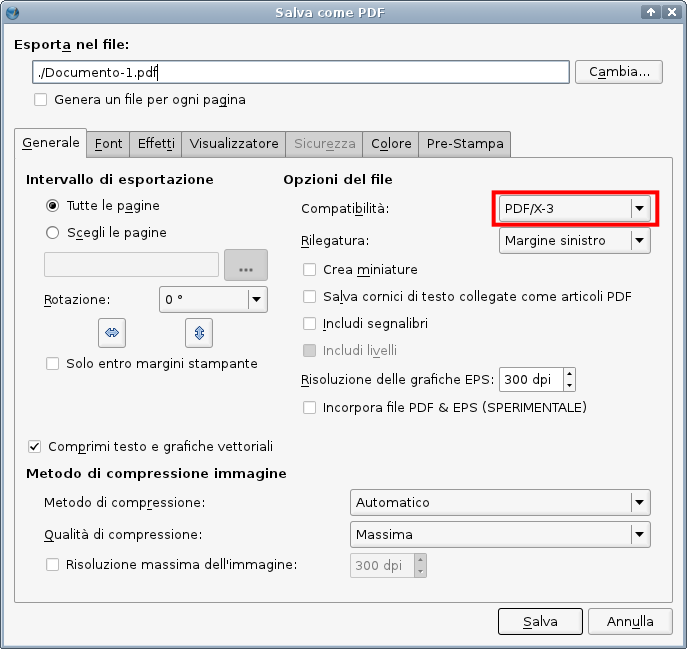
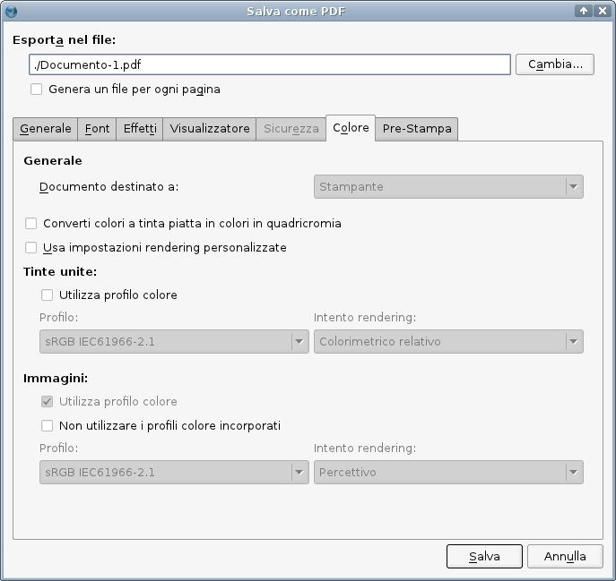
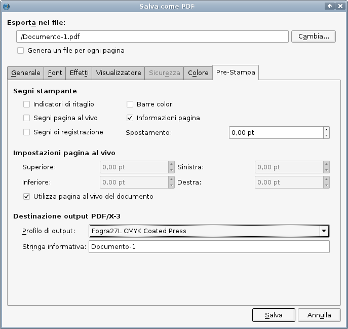

La capacità di esportare in formato PDF/X-3 è stata una tappa molto importante nello sviluppo di Scribus. Lo ha reso la prima applicazione di impaginazione in grado di gestire questo esigente, ma aperto, standard ISO (ISO 15930-3:2002).
Quando volete ottenere una riproduzione del colore molto precisa e la vostra tipografia accetta (o richiede esplicitamente) file PDF/X-3. Se la vostra tipografia non è in grado di utilizzare questo formato, è probabile che nel prodotto finale i colori risultino alterati, rischio che è molto minore con file PDF di tipo più tradizionale.
Il principale beneficio del PDF/X-3 è che tipicamente il colore viene convertito in modo più accurato dal modello RGB al modello CMYK utilizzato dalla macchina tipografica. Si ottiene una maggiore accuratezza perché si mantiene il colore RGB fino a uno stadio avanzato del processo di stampa, e la conversione da RGB a CMYK viene eseguita dal RIP della macchina tipografica stessa, e inoltre perché l'uso dei profili colore è obbligatorio. Poiché il RIP conosce in dettaglio l'esatta gamma di colore della macchina, lo si considera in grado di offrire, nella maggior parte dei casi, una conversione accurata. Il PDF/X-3 non impedisce di utilizzare immagini CMYK, ma è ideale per conservare i colori RGB il più a lungo possibile nel processo.
Un problema da considerare è quale profilo colore utilizzare. Vi sono due strategie: la prima è quella di ottenere dalla tipografia il profilo ICC adatto per il particolare tipo di carta che sarà impiegato. La seconda consiste nel servirsi di uno standard per la stampa ben conosciuto, come SWOP, ECI o altri. L'uso del PDF/X-3 rende necessaria la collaborazione della tipografia, ma può realmente migliorare la corrispondenza dei colori nella stampa. Come sempre, una breve visita alla vostra tipografia prima di iniziare il lavoro è fortemente consigliata. Se non ottenete risposte, provate con un'altra. La stampa è un settore competitivo, e quasi sempre è possibile trovare delle alternative.
Nelle Impostazioni documento controllate che la gestione del colore sia attivata e che siano stati selezionati i corretti profili colore. La situazione ideale è che il profilo colore per la stampa corrisponda a una condizione di stampa definita da uno standard ISO, o che esso sia fornito dalla vostra tipografia. Se la gestione del colore non è attiva, non è possibile esportare in PDF/X-3. Poi selezionate File > Esporta …> Salva come PDF …, oppure fate clic sull'icona PDF nella barra degli strumenti.
Si apre questo pannello, in cui dovete selezionare “PDF/X-3” dal menù a discesa “Compatibilità” come mostrato qui sotto. Le impostazioni predefinite cambieranno automaticamente.
|  |
Poi passate alla scheda “Colore”, come mostrato qui sotto:
|  |
Notate che nella scheda “Colore” la scelta della destinazione del documento è disattivata. Il motivo è che quando si utilizza il PDF/X-3, la conversione allo spazio colore della macchina tipografica si presume che avvenga il più tardi possibile, e ciò significa che la conversione sarà eseguita dalla tipografia, e non da voi.
Poi selezionate la scheda “Pre-Stampa”, come mostrato sotto:
|  |
Questa è la fase in cui inserite nel PDF la condizione di stampa desiderata, che è definita dal profilo colore ICC. Questa è probabilmente la scelta più importante per quanto riguarda i profili colore, perché influenza il colore nel corso dell'intero processo. Potete anche inserire una breve nota sul documento, che potrebbe essere utile in seguito. Questo campo non può restare vuoto, poiché è richiesto dalle specifiche tecniche PDF/X-3. Se questo campo è vuoto, Scribus disabilita il pulsante “Salva”. Potete anche aggiungere altri elementi per la prestampa, come barre di colore o segni per la stampa, ma dovreste farlo soltanto se la vostra tipografia li richiede.
Nota: a causa dei rigorosi requisiti del PDF/X-3, alcune caratteristiche del formato PDF sono disabilitate, tra cui annotazioni, crittografia ed effetti di presentazione; tutti i caratteri sono automaticamente incorporati o inseriti come sottoinsieme. Inoltre le trasparenze non vengono esportate.